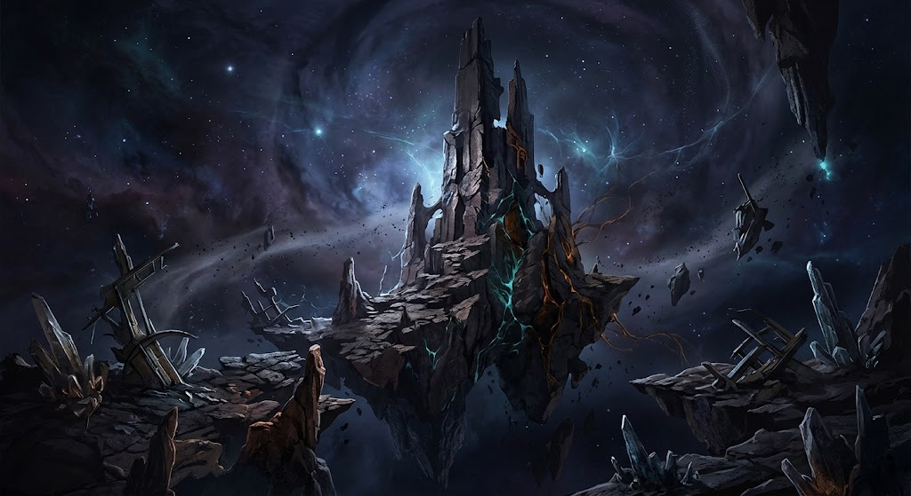

The Deep

The Deep exists, compared to the other known worlds, not as a singular world but rather as the binding fabric between them. It is the endless nothingness that separates all things, yet somehow allows them to exist alongside one another. A vast, incomprehensible expanse where distance, direction and even the passage of time hold little meaning. The Deep twists and shapes the nothingness, forcing pathways to exist where they shouldn't, connecting places that were never meant to meet. Few have managed to travel these pathways between worlds in an attempt to unravel the mysteries of the universe, and even fewer have returned. The pathways are treacherous, ever-changing things, shifting and collapsing without warning. A route that once led safely between two worlds might, on the next journey, lead somewhere entirely different. Those who wander too far from their intended course risk losing themselves in the endless expanse, where they may encounter the true horrors of the Deep.
For the Deep is not as empty as it first appears. There are things within it that have existed for longer than any known world. Things that drift through the nothingness, neither bound by its strange laws nor particularly concerned with the worlds connected by it. Whether these beings are native to the Deep, remnants of something that existed before the universe, or simply manifestations of the Deep itself remains unknown. Those unfortunate enough to encounter them rarely live long enough to describe what they witnessed. Those who do often return changed, speaking of impossible shapes, distant voices and things watching them from beyond the edges of perception.